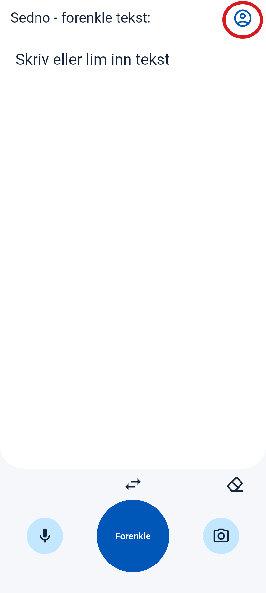
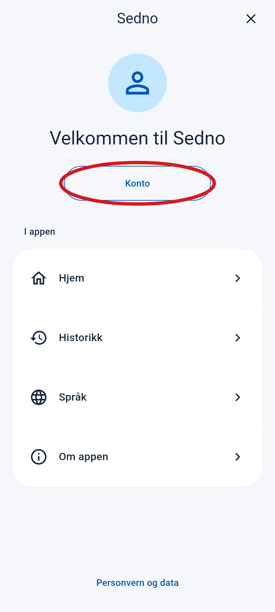
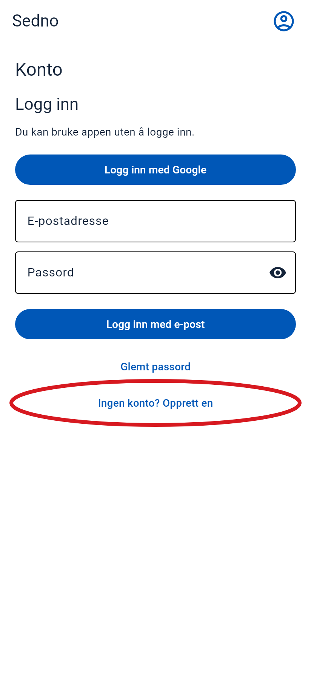
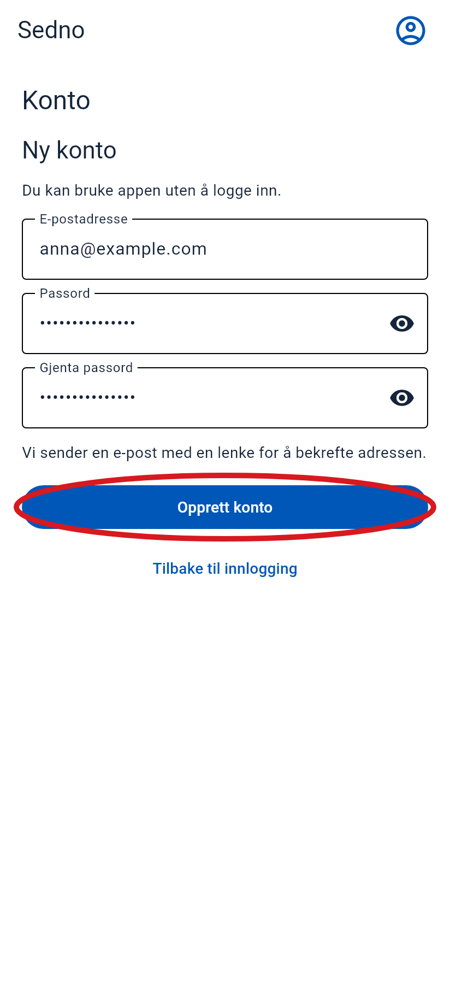
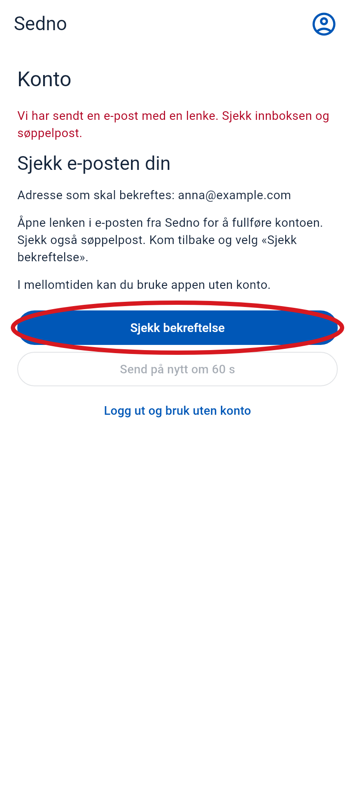
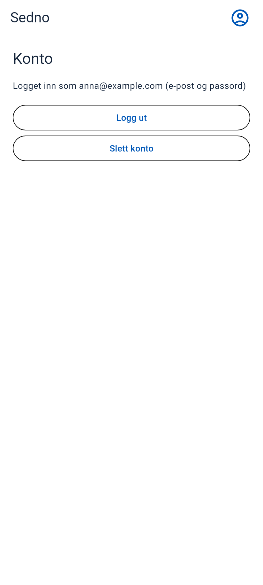

Slik lager du en konto
Åpne Sedno på telefonen. Følg disse trinnene i rekkefølge.
Den røde sirkelen viser hvor du skal trykke. Skjermbildene er fra appen. E-posten er et eksempel.
-
1 Åpne menyen
Trykk på personikonet øverst til høyre.
Trykk her

-
2 Velg «Konto»
Trykk på knappen i den røde sirkelen.
Trykk her

-
3 Velg å lage en konto
Trykk på «Ingen konto? Opprett en». Sveip opp hvis du ikke ser knappen.
Trykk her

-
4 Skriv inn e-post og passord
- Skriv inn e-postadressen din.
- Velg et passord med minst 6 tegn.
- Skriv det samme passordet en gang til i feltet under.
- Trykk på «Opprett konto».

-
5 Åpne e-posten din
Finn e-posten fra Sedno. Se også i søppelpost. Åpne meldingen og trykk på lenken for å bekrefte e-postadressen din.
Trykk her
Eksempel på e-post
Sedno
Bekreft e-postadressen din i Sedno.
Bekreft e-post -
6 Gå tilbake til Sedno
Åpne Sedno igjen. Hvis du fortsatt ser denne skjermen, trykk på «Sjekk bekreftelse».
Trykk her

-
7 Ferdig!
Du ser e-postadressen din. Kontoen din er klar.
